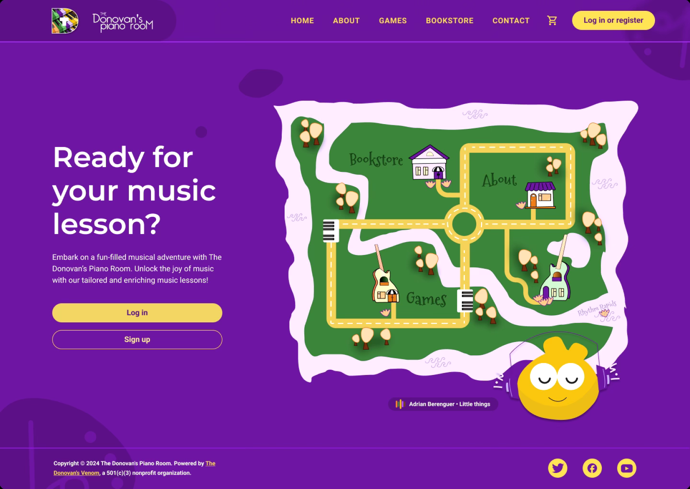
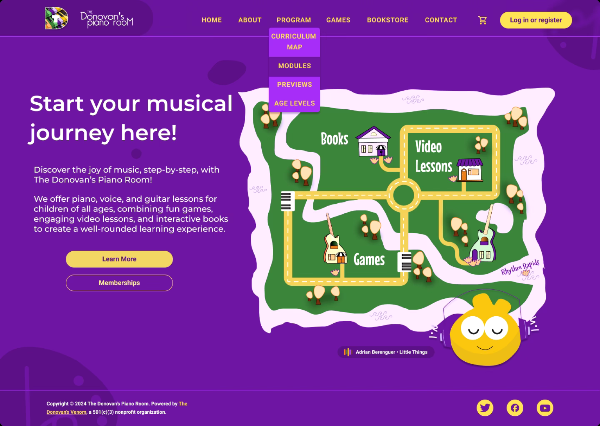
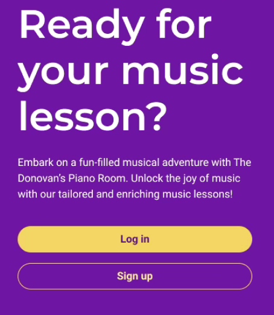
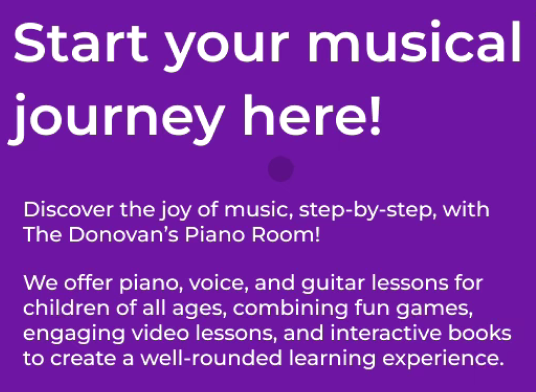
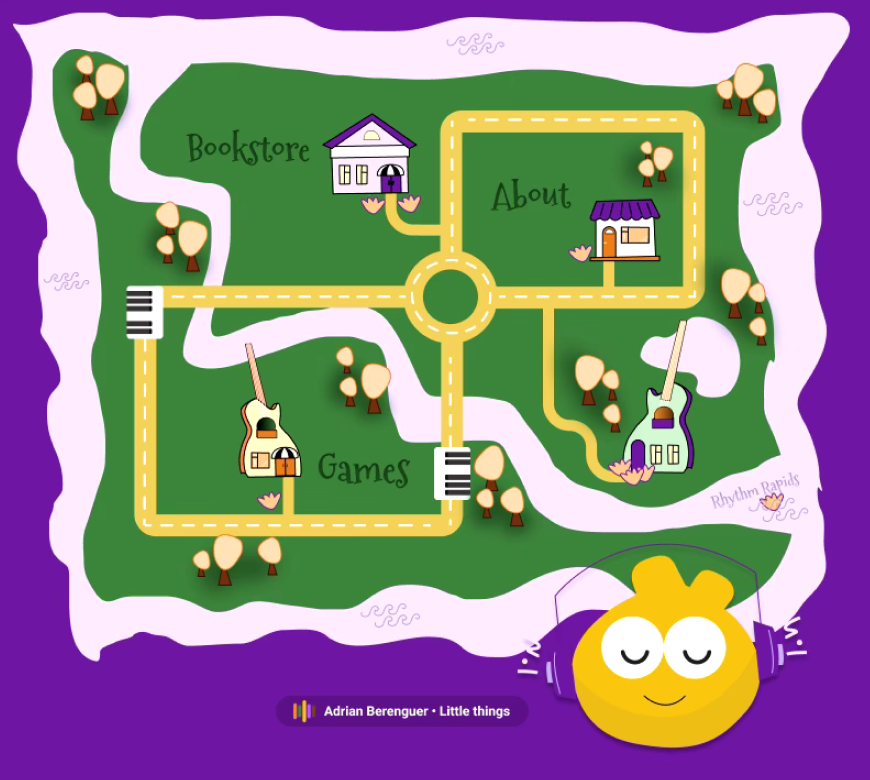
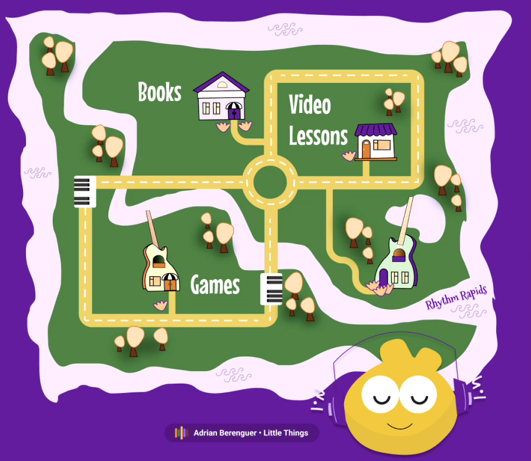

The Donovan’s Piano Room: Information Flow, Voice, and Tone
Role: User Researcher, Content Designer
Client: The Donovan’s Piano Room
Duration: 6 weeks
Tools: Usertesting.com, Figma
Methods: Usability Testing
About
The Donovan’s Piano Room (TDPR) is a virtual music education platform offering lessons in piano, voice, and guitar. Through games, video lessons, and interactive books, the program aims to make music education accessible, engaging, and comprehensive for children of all ages.
Problem Statement
Without clear, accessible information about TDPR’s offerings, parents may hesitate to enroll their children. To address this, the platform must make critical details easily available and communicate its value effectively. Additionally, to resonate with both parents and children, TDPR’s content must be engaging, accessible, and clearly structured, balancing a playful tone that appeals to children with a professional tone that builds trust with parents.
Research Overview
Purpose
Participants valued encouragement, shared tips/resources, and progress updates within goal-specific communities but expressed mixed feelings about public engagement.
- Assess how effectively TDPR’s website communicates its purpose, brand identity, and offerings.
- Identify key decision-making factors for parents considering TDPR.
- Highlight usability issues, content gaps, and areas for improvement.
Methodology
User Testing
- Conducted with six participants who navigated the live website and walked through the sign-up flow.
- Participants were selected based on specific criteria, including having children aged 12 or younger with an interest in music, to ensure alignment with TDPR’s target audience.
- Participants explored the website naturally and shared their first impressions, particularly focusing on their decision-making as parents seeking online music education.
Study Structrue
- Exploration Phase: Participants assessed the website’s usability, clarity, and content.
- Sign-Up Flow: Participants tested the enrollment process to uncover challenges.
- Post-Test Questions: Participants provided detailed feedback on their overall experience.
Demographics
- All participants had children aged 12 or younger interested in learning music.
- Participants expressed an interest in finding an online music education program for their child.
- Participants ranged in age from 18 to 65 years old and demonstrated average computer literacy.
Key Findings and Recommendations
1. Initial impressions and Branding
Findings
- The platform’s name, “The Donovan’s Piano Room,” led participants to believe it only offered piano lessons.
- Participants appreciated the playful design but noted a lack of critical information about the program’s scope.
- Parents expected to see multiple testimonials but found only one on the homepage.
Recommendations
- Rename the platform to “The Donovan’s Music Room” and add a tagline to showcase all instrument offered for instruction. This rebranding better communicates the platform’s broader offerings, addressing user misconceptions that the program is limited to piano lessons.
- Include a dedicated testimonials section, showcasing diverse success stories for each instrument.
- Add a homepage banner with images of students playing different instruments to visually communicate the program’s offerings.
2. Navigation and Curriculum Information
Findings
- Many sections, such as “Live Lessons” and “Program,” lacked detailed content, leading to frustration.
- Parents were unclear about the structure of lessons (e.g., live vs. self-paced).
Recommendations
- Create instrument-specific sections within the “Program” page, detailing lesson methods and engagement strategies.
- Add an interactive curriculum map to break down the learning journey, allowing parents to explore lesson modules and teaching methods.
- Ensure all navigation links are functional and guide users to relevant content.
3. Student Engagement and Interactive Features
Findings
- Participants expressed uncertainty about how TDPR would engage children effectively. Multiple parents highlighted the lack of interactive previews or examples demonstrating the lessons, games, and activities offered by the program.
- They compared the platform to others, specifically Duolingo, which provides clear previews of its engagement strategies. These concerns emphasize the importance of showcasing interactive elements to illustrate how the program captures and maintains children’s interest, ultimately helping parents assess its alignment with their child’s needs.
“I’m not sure how this will keep my child interested.”
“It’s hard to assess if my child would stay engaged without seeing how the lessons or games work.”
Recommendations
- Include sample lesson videos or screenshots to demonstrate interactive elements, such as games and practice challenges.
- Highlight engagement features (e.g., quizzes, games) and explain how they cater to various learning styles (visual, auditory, kinesthetic). On the current website, these learning methods are mentioned but in a broader, more generic way that lacks specificity to TDPR’s program.
- Introduce a “Student Spotlight” section featuring examples of student progress and testimonials to showcase how other students enjoyed the program and remained engaged. Highlighting their success stories and enthusiasm can build trust and help parents visualize how the program effectively works for children.
4. Age-Specific Content
Findings
- Parents expected tailored information for different age groups (e.g., preschoolers, middle schoolers) but found generic content instead.
Recommendations
- Create separate pages for each age group, detailing curriculum structures and teaching methods.
- Use photos or videos to showcase age-specific activities and lessons.
- Add testimonials that reflect the experiences of children in each age group.
Homepage Redesign
Objective
I redesigned the homepage to address key information and content gaps identified during user testing. To help parents easily access the information needed to make informed enrollment decisions, call-to-action buttons and a dropdown menu were added to guide them directly to key informational pages. Some recommendations were still under review and, as a result, not all of my suggested changes were incorporated into the redesign pitch.
Initial Design
My Redesign
Key Revisions
1. Updated Copy and Tone
- The heading and subheading were revised to directly engage parents and children with approachable yet professional language. The updates also ensured that the targeted age group, instruments offered, and the holistic learning approach of TDPR were made immediately clear. This was in response to user testing feedback, where parents expressed confusion about these aspects of the program.
Initial
Redesign
2. Visual Navigation Map
- Revised copy on the map to showcase key sections (Video Lessons, Games, Books). This supports the program’s holistic approach by emphasizing how these elements work together to provide an engaging and comprehensive learning experience, addressing user needs for clarity and cohesion.
- Each main section (Video Lessons, Games, Books) on the map will link to a specific page to direct them to accompanying pages.
Initial
Redesign
3. Enhanced Call-to-Actions (CTAs)
- Buttons like “Learn More” and “Memberships” were added to guide first-time visitors directly to relevant content.
- The addition of a dropdown menu ensures parents can access specific program details, such as curriculum maps, previews, and age levels, without searching extensively.
Initial
Redesign

4. Improved Accessibility
- Adjusted color schemes and typography to enhance readability and ensure inclusivity for all users.
Redesign Impact
By implementing clear CTAs, updated copy, headings, and a dropdown, parents are provided with immediate clarity on critical information and can seamlessly navigate to additional pages for further exploration. This ease of access allows users to find information more quickly, addressing the needs of busy parents who may have limited time to explore their options.
Voice and Tone Adjustments
To align with TDPR’s goal of engaging both parents and children, the platform’s voice and tone were revised to balance professionalism with playfulness. These revisions ensure the content is warm, approachable, and professional, striking the right balance to resonate with both parents and children.
Goals
- Present TDPR as friendly and welcoming while maintaining credibility and avoiding overly formal or casual language.
- Create an engaging tone that reflects the program’s interactive and fun nature.
- Ensure the content is easily understood by parents and exciting for children.
Reflection
Improving the clarity, navigation, and interactivity of TDPR’s website will help parents make confident decisions about enrolling their children. By addressing user concerns and providing detailed, engaging content, TDPR can establish itself as a trusted and appealing platform for online music education. The recommendations outlined in this study aim to enhance the user experience and better align the website with the needs of both parents and children.